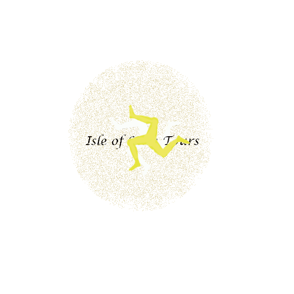

I created an animated GIF for social media platforms to go at the bottom of a tour’s poster. This gif will potentially attract tourist to the website. I used elements from my logo to design the gif. I created several layers on Gimp, I used text and drew my logo on the canvas layer and merged it with the text. I blended the layers together and slowed down the rate at which the gif plays to 250 milliseconds, so the user has time to read the message behind the gif. I created the right balance to keep the momentum going within the gif.